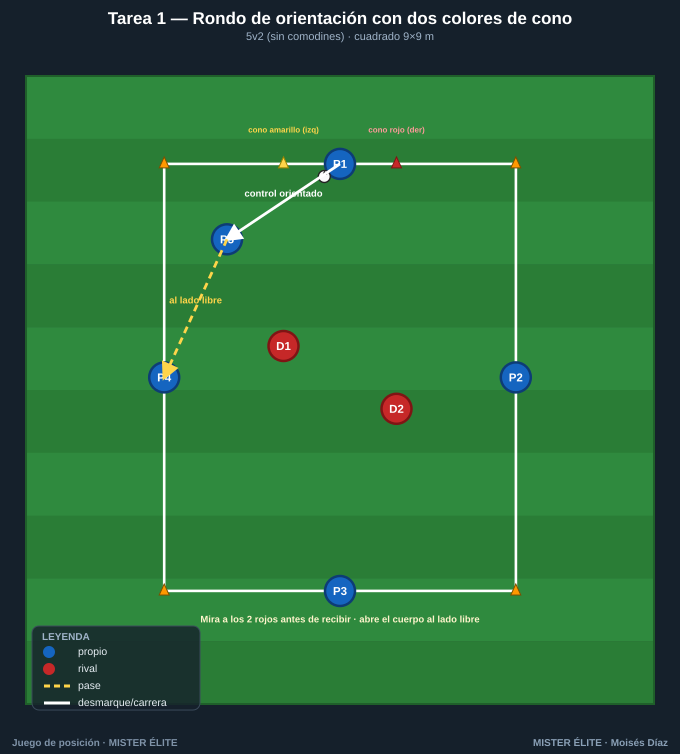
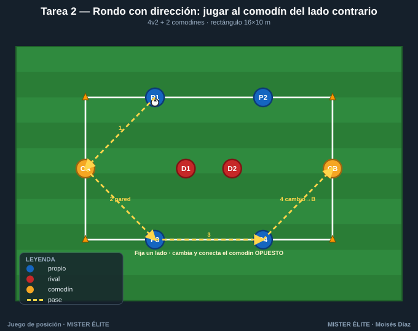
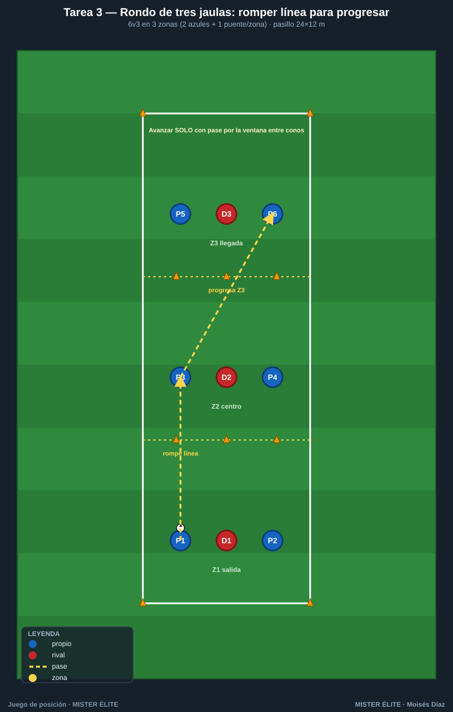
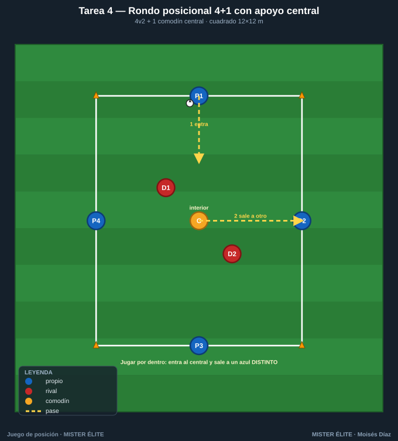
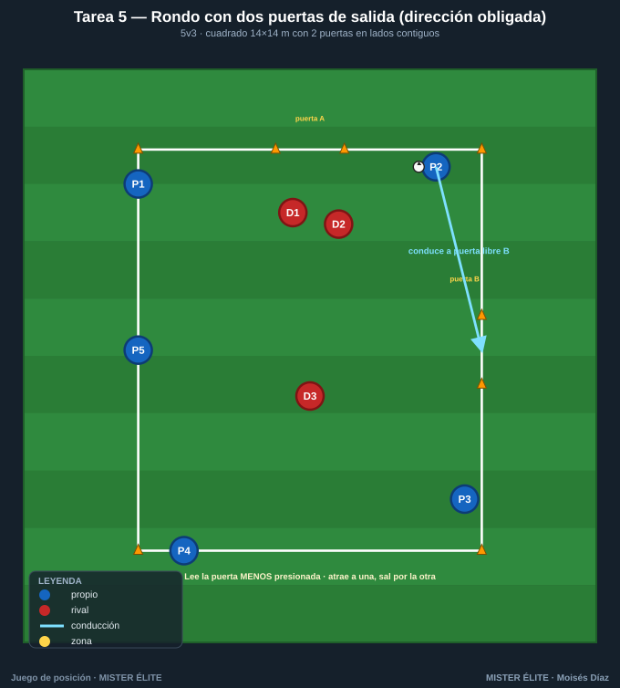

Familia 1 · Rondos posicionales y de orientación (T1–5)
Notación: poseedores azules, defensores rojos, comodines ámbar. Flechas: pase (amarillo discontinuo), conducción (azul), desmarque (blanco), presión (rojo). Secuencias numeradas 1-2-3. El rondo entrena el qué y el cómo del pase (perfil, primer toque, lectura) con máxima densidad. Aquí se le añade un primer sentido de orientación y dirección para enlazar con el juego de posición.
Tarea 1 — Rondo de orientación con dos colores de cono
Objetivo. Orientación corporal y perfil de recepción. El poseedor aprende a abrir el cuerpo para jugar SIEMPRE hacia el lado libre (lejos del defensor), no por inercia.
Organización. - Relación: 5v2 (5 azules en cuadrado + 2 rojos dentro). Sin comodines. - Medidas: cuadrado de 9×9 m. - Material: 4 conos esquina; en cada lado un cono amarillo a la izquierda y uno rojo a la derecha del jugador (referencia de orientación). Balones de repuesto en 2 esquinas.

Desarrollo. Rondo clásico 5v2 a uno-dos toques. La diferencia: antes de recibir, el azul mira dónde están los 2 rojos y orienta el primer apoyo (control orientado) hacia el cono amarillo o rojo que deje libre la presión.
Provocaciones (medibles). - Máximo 2 toques. Si el primer control no va orientado a un lado libre (control "de frente y parado"), balón perdido → rotan los rojos. - Punto de equipo cada 8 pases con al menos 1 control orientado por jugador. - Si los rojos roban o tocan, entra el azul que perdió y sale un rojo.
Variantes (fácil → difícil). 1. Fácil: 3 toques, rondo 6v2. 2. Media: 2 toques, 5v2. 3. Difícil: 1 solo toque y prohibido devolver al que te pasó (fuerza orientación a un tercer apoyo).
Coaching. - "Recibe medio cuerpo girado": pie de apoyo apuntando al lado por el que vas a salir. - Ver antes de recibir: cabeza arriba en el momento del pase del compañero. - El control resuelve el pase: si el control es bueno, el pase es fácil.
Duración. 4 series de 3 min, 1 min descanso (rota la pareja de rojos cada serie).
Tarea 2 — Rondo con dirección: jugar al comodín del lado contrario
Objetivo. Cambio de orientación y uso del hombre libre lejano. El punto solo vale conectando con el comodín del lado opuesto a la presión.
Organización. - Relación: 4v2 + 2 comodines (4 azules, 2 rojos dentro, 2 comodines ámbar fijos en bandas cortas opuestas). - Medidas: rectángulo 16×10 m. - Material: 4 conos esquina + 2 conos para las casillas de comodines. Petos.

Desarrollo. Los azules circulan; objetivo: conectar con un comodín ámbar, que devuelve de pared al primer toque, y entonces cambiar y conectar con el comodín del extremo OPUESTO.
Provocaciones (medibles). - Punto SOLO si se conecta comodín A → circulación → comodín B sin pérdida. Repetir el mismo comodín no puntúa. - Comodines a 1 toque. - Si los rojos roban, entra el azul perdedor.
Variantes (fácil → difícil). 1. Fácil: comodines a 2 toques, rectángulo 18 m de largo. 2. Media: comodines a 1 toque, 16 m. 3. Difícil: añadir un 3.er rojo (4v3+2) → obliga a circular más rápido.
Coaching. - "Fija a un lado, juega al otro": atraer la presión a una banda para liberar la opuesta. - Cambio con el menor número de pases posible (pausa-aceleración). - El comodín libre pide con el cuerpo abierto al campo.
Duración. 4 series de 4 min, 90 s descanso.
Tarea 3 — Rondo de tres jaulas: romper línea para progresar
Objetivo. Romper líneas con pase interior. El rondo deja de ser circular y adquiere dirección de avance entre tres zonas.
Organización. - Relación: 6v3 en 3 zonas (2 azules + 1 azul "puente" por zona; 1 rojo por zona). - Medidas: pasillo de 24×12 m dividido en 3 cuadrículas de 8×12 m. - Material: 8 conos que delimitan las 3 zonas (Z1 salida – Z2 centro – Z3 llegada). Petos.

Desarrollo. El balón nace en Z1. Para avanzar de zona hay que romper la línea de conos con un pase (no se puede conducir a la zona siguiente). Los rojos defienden su zona sin salir. Llegar a Z3 = punto.
Provocaciones (medibles). - Solo se progresa con pase entre zonas (vertical/diagonal que cruce la línea). Conducir cruzando = pérdida. - Máx. 3 toques de equipo por zona antes de progresar. - El azul que recibe en la zona nueva debe estar ya dentro cuando llega el balón.
Variantes (fácil → difícil). 1. Fácil: se permite conducir Z1→Z2; pase obligatorio solo Z2→Z3. 2. Media: pase obligatorio en las dos transiciones. 3. Difícil: un rojo puede saltar a presionar la zona del balón (2v2 puntual) → exige timing del pase.
Coaching. - Esperar a que el receptor entre en zona (no pasar antes de tiempo). - Pase al pie contrario del defensor para fijar la línea. - Reconocer la "ventana": el hueco entre conos = la línea de pase que rompe.
Duración. 5 series de 3 min; cambiar los 3 rojos cada serie.
Tarea 4 — Rondo posicional 4+1 con apoyo central (jugar por dentro)
Objetivo. Uso del jugador interior / pivote y juego "por dentro". Entrena la decisión exterior↔interior y la protección del balón del comodín central.
Organización. - Relación: 4v2 + 1 comodín central (4 azules en cuadrado, 1 comodín ámbar en el centro, 2 rojos). - Medidas: cuadrado 12×12 m. - Material: 4 conos esquina + 1 aro/cono que marca la casilla central. Petos.

Desarrollo. Los azules circulan por fuera; el comodín se mueve dentro buscando líneas de pase. Cada vez que el balón entra al central y sale al lado opuesto (entra-sale = "jugar por dentro"), suma. El comodín NO puede devolver al mismo jugador.
Provocaciones (medibles). - Punto cada vez que el balón pasa por el comodín y sale a un azul distinto del que se lo dio (tercer hombre embrionario). - Comodín a 1 toque salvo que reciba de espaldas (2: control orientado + pase). - Si los rojos cierran el central, los azules juegan exterior, pero solo la conexión interior puntúa.
Variantes (fácil → difícil). 1. Fácil: comodín 2 toques, cuadrado 14 m. 2. Media: comodín 1 toque. 3. Difícil: 2 comodines centrales; ambos deben tocar antes de salir (juego de pivotes).
Coaching. - El central recibe entre los dos rojos, perfil abierto. - Exterior fija, interior libera: provocar el pase interior con el cuerpo del exterior. - Soltar rápido tras recibir dentro (no enamorarse del balón en zona de presión).
Duración. 4 series de 3 min, 1 min descanso.
Tarea 5 — Rondo de orientación con dos puertas de salida (dirección obligada)
Objetivo. Orientación + finalidad: dos "puertas" y hay que decidir hacia cuál salir según dónde esté la presión. Transición rondo → conducción dirigida.
Organización. - Relación: 5v3 (5 azules, 3 rojos). Sin comodines. - Medidas: cuadrado 14×14 m con 2 mini-puertas de conos (1,5 m) en dos lados contiguos (no opuestos). - Material: 4 conos esquina + 4 conos para las 2 puertas. Petos.

Desarrollo. Rondo 5v3. La posesión "vale" cuando los azules consiguen conducir el balón controlado a través de una de las dos puertas tras una secuencia de pases. Dos puertas obligan a leer cuál está libre.
Provocaciones (medibles). - Punto = salir conducido por la puerta del lado MENOS presionado (decisión correcta). Salir por la puerta con un rojo encima no puntúa. - Mínimo 5 pases antes de buscar la puerta. - Pérdida o salida forzada por la puerta cerrada → rotan rojos.
Variantes (fácil → difícil). 1. Fácil: puertas de 2,5 m; 5v2. 2. Media: puertas de 1,5 m; 5v3. 3. Difícil: la salida debe hacerse de primer pase a un compañero situado fuera (no conducida).
Coaching. - Escanear ambas puertas antes de decidir. - Atraer a los rojos a una puerta para abrir la otra (provocar-fijar). - Cambio de ritmo justo al salir por la puerta libre.
Duración. 5 series de 2,5 min; rotación de rojos cada serie.
MISTER ÉLITE — Moisés Díaz · Familia 1 · Rondos posicionales y de orientación.